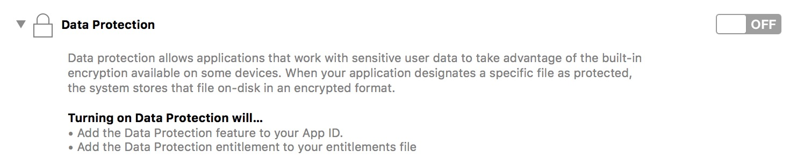
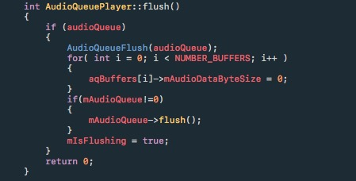
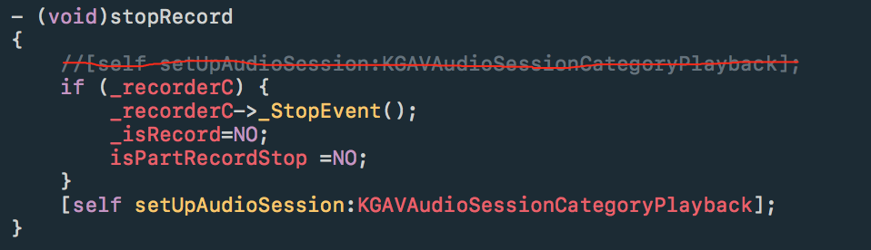

遇到的疑难点：
Q1：统计上报相比 8.2.0 版本， 8.3.0 版本的本地歌曲播放 204（ffmpeg 预解码出错） 错误升高！
S：既然是解码出错，就先确认播放源有没有问题，根据上报的歌曲 hash 从曲库中拿到歌曲，再放到播放器里播放，确认了曲库歌曲没有问题；接下来就考虑是否是网络波动导致下载完后歌曲损坏了，这时候就得联系用户了，跟用户确认后该用户并没有下载这些歌曲，可以确认那就是播放的是已经缓存过的歌曲，拿到用户的整个 Document 文件夹后分析了这些缓存歌曲文件，发现这些缓存歌曲是经过加密的。这时候问题就清楚了，用户 8.2.0 版本在线试听了这些歌曲后缓存到了本地，这些缓存都是经过加密的；升级到 8.3.0 后，缓存歌曲是不经过加密的，然后在播放 8.2.0 那些经过加密的缓存歌曲时 ffmpeg 就报了 204 错误了。
Q2：造成死锁的经典例子：本身已经加锁然后在回调函数里面调用了另外一个加锁函数或者是自己（同一把锁）。
{kind=link}
Q3： App 上线后发现奔溃率大幅度增加，很多用户反馈锁屏播放歌曲应用闪退.
S3：查看 Fabric 后发现在锁屏渲染歌词时发生了奔溃，具体的奔溃线程却是一个获取时间的系统函数。因为灰度并没有发现这个问题，排查后发现是在打包提审 App Store 时意外打开了一个编译选项 Data Protection ，然后就莫名其妙的奔溃了，估计是做了更加严格的权限保护，然后 App 并没有做响应的处理导致的，后来关闭掉就好了。

Q4： 播放 ipod 歌曲，然后暂停，退到后台不进行任何操作，过5分钟左右再回到 App ，点击播放，发现切换到下一首歌曲了。
S4：切换的下一首的逻辑是上层收到了 Error 消息后才会切换下一首歌，首先想到的是应用暂停播放后在后台不进行任何操作然后被系统挂起了，恢复到前台时，相应的现场没能恢复，导致播放失败。Debug 的时候发现在 ipod 解码线程的CMSampleBufferRef next_buffer=[item_reader_output copyNextSampleBuffer];
出错了，返回了 AVAssetReaderStatusFailed 了。虽然说找到了出错的地方，但是具体是什么引起这个出错的还是找不到，取了一个折中的解决办法，在 App 将要被系统挂起的 时候设置标志位为 1 ，然后在回到前台播放的时候判断这个标志位，YES 的话就重新设置数据源然后再播放；NO 的话就直接调用 resume 恢复播放就好了。
1 | __block UIBackgroundTaskIdentifier backgroundTask = [application beginBackgroundTaskWithExpirationHandler:^{ |
.
1 | - (void)playAction { |
Q5：在 KTV 录唱页面（边录边播，播放伴奏或者原唱）
退出录制的时候发现会有卡音的现象，具体的表现为正常音量然后声音突然变小紧接着又恢复到原来的最后变为 0 这样，还是用图像来表示比较形象些，如图：
A5：问题分析，刚开始以为是在 stop 录制和播放的时候，播放器已经放进缓冲区的数据没有 flush 掉导致的，查看了代码之后发现是有调用 flush() 的，而且 flush() 的代码也没有什么问题，

再接着分析的时候，想着多线程也有可能导致这个问题。
线程一：不断读取数据然后往 buffer 里面填充数据。
线程二：调用 flush 和 stop 的又是另外一个线程，在执行完 flush() 和 stop() 函数之后，有可能因为异步的原因，读取线程还没停下了，可能延迟了几毫秒这样子导致有一部分数据又被填充到播放缓冲区去了。
针对这个猜想，然后有在 stop() 和 AudioQueue 的回调函数中加了锁，经过测试也发现没有起作用。
好在停止逻辑的这段代码量不多，通过最笨的删减无关或者非必要代码之后发现了在 stopRecord() 的里面在 _stopEvent() 执行之前先将原来的 AVAudioSessionCategoryPlayAndRecord 设置为 AVAudioSessionCategoryPlayback 才导致上几毫秒的一个短暂卡音现象。
S5:

Q6：在停止录制的时候发现会有嚓嚓嚓的类似电流一样的杂音。
S6：在调用 audioQueue 的 stop 方法前调用了 AudioQueuePause(audioQueue) 方法导致的，去掉就好了。
Q7：不断的进出直播间，有时候会出现黑屏的情况。查找了代码之后发现，在调用系统接口VTDecompressionSessionCreate 有时候会返回 error：-12913 查询之后对应的错误信息是kVTVideoDecoderNotAvailableNowErr 。
S7：前 N 次调用 VTDecompressionSessionCreate 这个接口的时候没有错误，在第 N+1 次调用的时候发现就出错了，而且每次错误码都是 -12913 ，首先想到的是去排查这个接口的参数是否使用不当，检查完之后似乎也没有什么问题；根据出错的现象，参数有问题的话应该是在第一次调用VTDecompressionSessionCreate的时候就出错了而不是等到第 N+1 次，估计是调用逻辑上出了什么问题。排查调用逻辑的时候发现在退出直播间的时候没有调用到kgplayer_decoder_hardwareUnInit(decoder->mHarwareDecoder); 导致每次释放的时候都是有内存泄露的，而当内存泄露到一定程度（还没到被系统 kill 掉的程度）再次去调用 VTDecompressionSessionCreate 申请内存的时候就会报 -12913 的错误了。
Q8：切歌的时候发现有轻微的卡的一声，10.3 系统发现暂停后恢复播放会有一个淡入过程，而且淡入过程的时间还比较长。
S8：很莫名其妙的一个 bug，在 10.3 以下的系统是不会出现的暂停后恢复播放有淡入的过程的，估计是 10.3 系统换成 APFS 了。后来查看修改记录的时候发现是 AVAudiosession 的 Category 被修改成了 AVAudioSessionCategoryPlayAndRecord ，还原成之前的 AVAudioSessionCategoryPlayback 问题就解决了。
另外，切歌有轻微卡音的问题还没有找到具体的原因，有一个解决办法是在 AudioQueue stop 的时候先 pause 一下再 stop 就不会出现这个问题了，至于为什么要这样调用要在进一步排查才能知道了。
Q9：在版本1.0的时候有一个Event1类，就对该类的属性做了一些 initWithCoder和encodeWithCoder 操作而已，后来在2.0版本的时候将 Event1 重命名为 Event，导致在一些手机上会出现莫名其妙的崩溃。奔溃的地方都是在这里：
1 | + (void)saveDataIntoUserdeflaut:(id)data forKey:(NSString *)aKey |
S9：调查发现出现崩溃的都是一些覆盖安装的包才会出现的，原因是在1.0的时候本地有保存了一些已经 archive 过的 Event1 类型数据，然后在读取的时候以新的类 Event 去 unarchive 就导致找不到类而崩溃了。
明确了原因之后修改就容易了，在 unarchive 的时候将类型指定为 Event 类就好了。如下：
1 | + (void)saveDataIntoUserdeflaut:(id)data forKey:(NSString *)aKey |
Q10：
1 | - (void)notify:(const char *extra, int extraLength) |
发现在调用 [NSString stringWithUTF8String:] 这个进行cstring 的转换时很大概率出现了nil的情况。
S10：[NSString stringWithUTF8String:] 这个接口在转换的时候是以0结尾的，上面的 extra2 在 new 了一块内存之后，然后给它赋值了，但是并没有以 0 结尾，后面是一些随机数。所以就出现了有时候转换成功了，有时候转换失败了的情况。
既然明确了问了，这样修改一下就好了。
1 | - (void)notify:(const char *extra, int extraLength) |